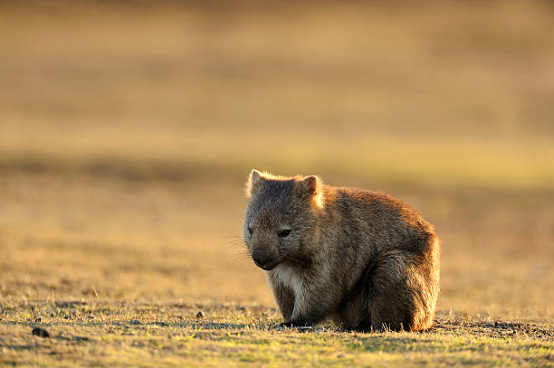

Australia's biodiversity is declining at an alarming rate, with more than 1,700 species and
ecological communities currently classified as threated and at risk of extinction. Many species
that once thrived across the Australian landscape for thousands of years have disappeared within
only the last few decades.
Preserving biodiversity is essential for maintaining ecological balance, as evert species plays an important
role in sustaining healthy ecosystems. However, Australia's unique biodiversity continues to face increasing
threats from environmental change, habitat destruction, and human activity.
This porject aims to highlight the severity of Austrlia's vanishing biodiversity and raise awareness
of the urgent need for consevration. It is hoped that through greater understanding, individuals and
communities will be encouraged to play a role in protecting and preserving Australia's natural
beauty for future generations.
Vulnerable
Endangered
Critically
Endangered
Extinct
Nearly half of Australian Species are Endangered or Critically Endangered, with 102 species already lost forever.
This chart is included to understand the severity of Australia's biodiversity crisis at a glance. Each square represents 1% of all species listed under the EPBC Act, allowing us to visually grasp the proportion of species at each level of threat.
The results show that the majority of Australia's threatened species fall under the Endangered and Vulnerable categories, reflecting a widespread and escalating crisis. Most alarming is the presence of Critically Endangered and Extinct species, highlighting that for many, the window for intervention is repidly closing or has already passed.
This breakdown is essential for understanding not just how many species are at risk, but how urgently conservation action is needed across different threat levels.
New South Wales
761 threatened species - the highest of any state
Queensland
614 threatened species - driven by habitat loss
Northern Territory
158 threatened species - lowest density despite vast size
Western Australia
617 species — second highest despite remote location
New South Wales leads with 761 threatened species — nearly 200 more than any other state. Despite its vast size, the Northern Territory records the fewest at just 158, suggesting that human activity and habitat loss drive threat density more than geography alone.
The split between animals and plants varies dramatically by state. Western Australia and the Northern Territory are almost entirely animal-dominated (90%+), while New South Wales and Victoria have a far more balanced mix, with plants making up nearly half of all threatened species.
Click any state on the map to explore its breakdown.
Select a state
Click any state on the mapAnimals
—
Plants
—
Threat Level (click a box to filter)
Bird threatened species have risen sharply since 2020, with critically endangered listings nearly doubling
Mammal listings dropped significantly around 2005–2015, but have surged since 2020, with endangered and critically endangered categories driving most of the increase.
Ray-finned fish show the most dramatic recent spike, with critically endangered species appearing prominently after 2022
Reptile threatened species remained relatively stable until 2020, after which all three threat categories rose steeply, pointing to compounding pressures in recent years.
Invasive species remain the single greatest threat to Australia's Wildlife, affecting more than three quarters of all threatened species.
This chart is included to understand the key pressures driving Australia's biodiversity crisis. Each dot represents a specific threat category, positioned by the proportion of EPBC-listed species it affects.
The result reveal that invasive species significantly dominate at 78.4%.
78.4% — Invasive species is the dominant threat by a large margin, affecting nearly 4 in 5 threatened species
Fire & climate — Together these two account for over 90% of species when combined with invasive pressures
Climate change ranks 7th — despite being the fastest growing threat in recent years
A cluster of threats between 28–35% suggests many species face multiple simultaneous pressures
Since 1971, invasive species on Australian land have grown by over 153% — and show no signs of slowing down.
This chart tracks the percentage growth of introduced and invasive species across both land and marine environments since 1971. Use the buttons to explore each environment separately.
Growth in terrestrial invasive species since 1971
Growth in terrestrial introduced species since 1971
Introduced species are brought to Australia by human activity. When they spread uncontrollably, they become invasive, competing with native species for food and habitat, and driving many toward extinction.
Crtically Endangered species remain the least protected, despite facing the hgihest risk of extinction.
This chart is modelled to understand whether Australia's protected area system is prioritising the species that need it most. By comparing protection rates across threat levels, we can assess the effctiveness of current conservation policy
The results reveal a troubling pattern where Critically Endangered species have the lowest protection rate at just 24%, while Extinct species ironically show the highest.
States with the most threatened species are often the least protected.
This map shows the average protection rate per state alongside the total number of threatened species. Darker green indicates higher protection, while larger circles indicate more threatened species.
NSW & VIC — the least protected states (17–29%) yet home to over 2,000 threatened species combined
WA & NT — protection rates above 40% offer a stronger buffer, though WA still records 817 threatened species
TAS — highest protection rate at 46%, yet 485 species remain threatened
QLD — 999 threatened species at 38.9% protection, partially buffered but still under significant pressure